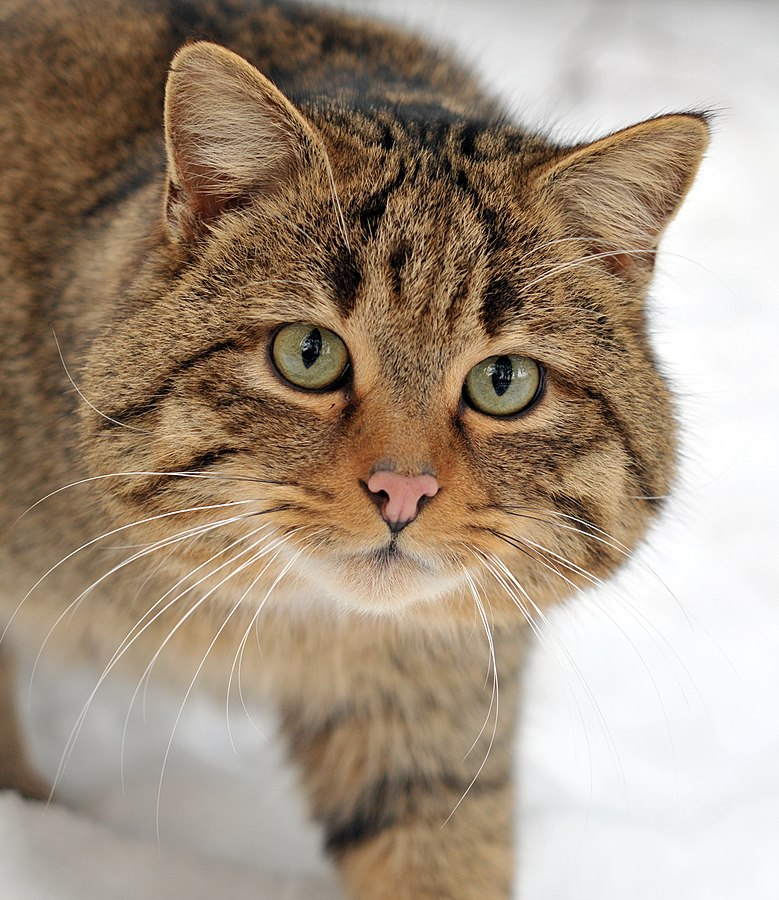
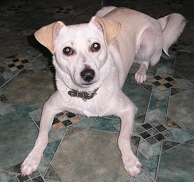
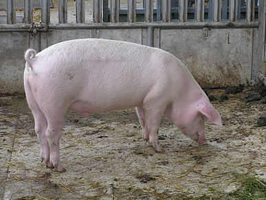
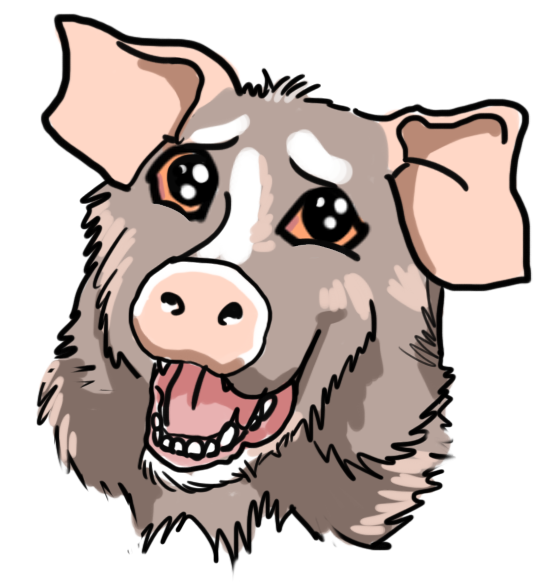

Кіт🐱
Кіт[1][2][3] (Felis) — рід хижих ссавців родини котових (Felidae). деяких старіших системах класифікації до нього зараховували всіх представників малих кішок (Felinae), проте зараз безпосередньо до роду відносяться лише кілька видів невеликих тварин, що мешкають у Євразії та Африці. Найвідомішим представником цього роду є свійський кіт — підвид кота лісового. За розміром найменшим представником роду є вид мураховий тигр довжина тіла і голови якого становить від 38 до 44 см. Найбільшим є кіт очеретяний із довжиною тіла і голови від 62 до 76 см[4]. Види котів (Felis) мешкають у широкому різновиді природних середовищ, від болотяних до пустель, і харчуються здебільшого малими мишоподібними, птахами й іншими дрібними тваринами. Генетичні дослідження показують, що Кіт (Felis), Манул (Otocolobus) і Азійський кіт (Prionailurus) походять від Євразійського прародителя що існував близько 6,2 мільйонів років тому, і що види Котів розділилися від 3,04 до 0.99 мільйонів років тому[5][6].
- вид Кіт очеретяний (Felis chaus)
- підвид Felis chaus chaus Schreber, 1777
- підвид Felis chaus affinis Gray, 1830
- підвид Felis chaus fulvidina Thomas, 1928
- вид Кіт чорноногий (Felis nigripes)
- вид Кіт барханний (Felis margarita)
- підвид Felis margarita margarita Loche, 1858
- підвид Felis margarita thinobia (Ognev, 1927)
Пес свійський🐶
Пес сві́йський або соба́ка сві́йський (Canis lupus familiaris або Canis familiaris) — культигенна тварина. Термін застосовують як для домашніх, так і для бездомних тварин. Свійський пес був одним з найбільш широко застосовуваних службових та компанійських тварин протягом всієї історії людства. За різними оцінками, одомашнення вовка відбулося від 100 000 до 15 000 років тому. Дослідження мітохондріальної ДНК показує, що розділення еволюційних ліній собак і вовків відбулося близько 100 000 років тому. Собака швидко став незамінним у всіх світових культурах та був дуже цінним у ранніх людських поселеннях. Зокрема вважають, що успішна еміграція через Берингову протоку була б неможливою без їздових собак. Собаки виконують багато видів робіт для людей, таких як полювання, охорона, служба в поліції та військах, а також собаки допомагають пасти стада худоби, допомагають інвалідам та служать компанійськими сімейними собаками. Ця універсальність, більша ніж практично в будь-якої іншої відомої людству тварини, дала собаці прізвисько «найкращий друг людини». За підрахунками, на планеті на 2015 рік проживало близько 525 мільйонів собак[1]. Завдяки селекції було виведено сотні різноманітних порід, і зараз між собаками різних порід виявляють більше поведінкових та морфологічних відмінностей, ніж у будь-яких інших наземних ссавців. Наприклад, висота в холці може варіювати від кількох сантиметрів (чихуахуа) до майже метра (ірландський вольфгаунд, великий данець); забарвлення — від білого до чорного, включаючи світло-жовте, сіре, коричневе з великим розмаїттям відтінків.
На верхСвиня свійська🐷
Свиня свійська (Sus domestica) — парнокопитна тварина роду Свиня (Sus) родини свиневих (Suidae), одомашнена форма виду Sus scrofa. Походить від європейських і азійських диких свиней (див. Свиня дика). Свійська свиня дає м'ясо і сало, а також шкіру і щетину; вона виявляє високу плодючість і швидко росте. Завдяки багатоплідності, скоростиглості, великій забійній вазі при порівняно незначній витраті кормів на одиницю продукції, свинина відіграє головну роль у загальному виробництві м'яса (в УРСР 1970 — 46 %). Вона майже вдвічі поживніша за яловичину і баранину. Завдяки цим прикметам значення свинарства постійно зростає, з пол. XIX ст. — зі збільшенням попиту на м'ясні продукти серед дедалі більшого населення міст. Зростання кількості свиней у світі (у млн тонн): 1938–39 — 296, 1965–66 — 588, і вже зараз поголів'я свиней у світі становить близько 1 млрд (2015)[1], більш ніж половина його зосереджено в Азії. Китай посідає перше місце у світі за кількістю свиней (майже 50 % світового виробництва). За обсягом свинарства вирізняються також США (10,3 % світового виробництва), Бразилія, Німеччина, Данія, Франція, Велика Британія, Нідерланди, Угорщина. Нині існує понад 600 порід свиней різних напрямків продуктивності (м'ясні, сальні, беконні, м'ясо-сальні).
На верх🐷Свинособака🐶
Свинособака або свинопес (Choerocyon vulgaris) - міфічна інтернет-тваринка, що символізує ватяну озлобленість та обмеженість. в деяких варіантах це рожевий песик зі свинячими вухами. в інших - сірий песик, з п'ятаком та вухами свині. Використовується саме по відношенню до москалів. Але власне образ походить з Німеччини, як не дивно.
Свинособаки та Україна
Термін в наших реаліях зародився в інтернет-баталіях з початку усіляких анексій та війни на Донбасі. Якось органічно народився в безкінечних срачах і легко прижився поряд з Путін — хуйло. Використовується на знахабнілих або дурних опонентах, задля підкреслення їх обмеженості світогляду або з метою спровокувати любителя "русского міра" на вибух емоцій. Іноді використовують термін "Свинособакія" [1] для позначення Велікой Родіни цих інтернет-тваринок.
На верх